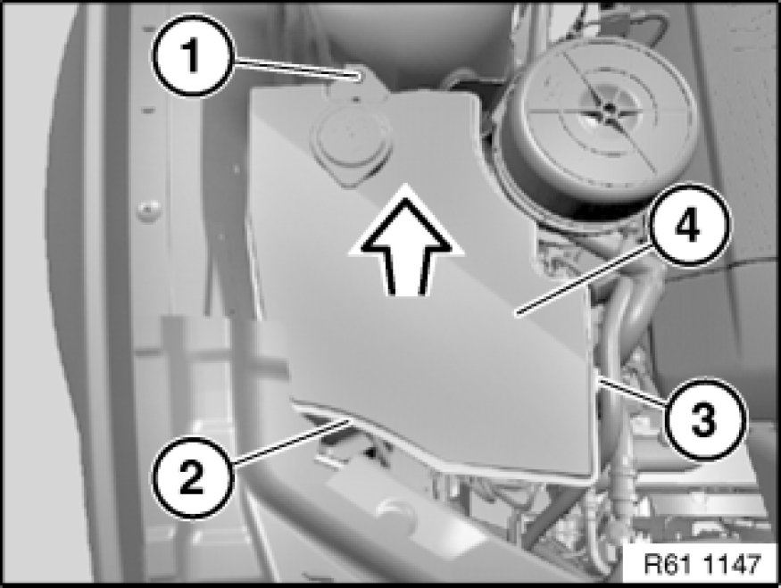
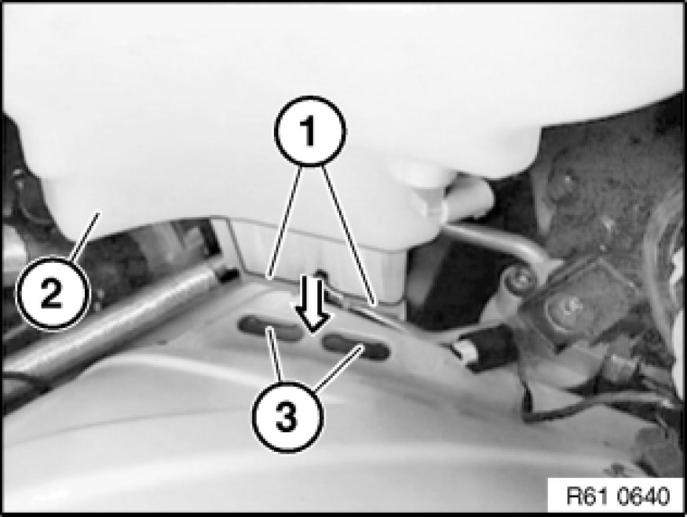
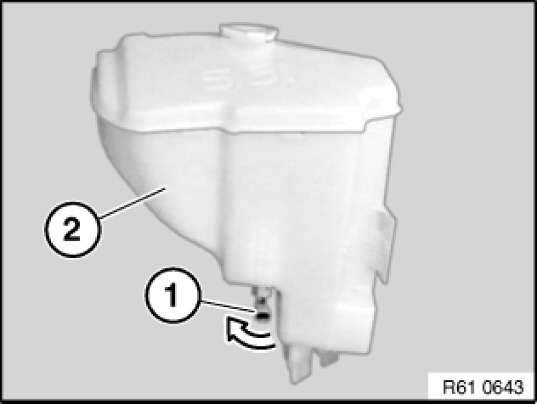

Windshield Washer Reservoir: Service and Repair
61 71 061 - Replacing fluid reservoir for windshield washer system

Note:
Drain fluid tank for windshield washer system.

Necessary preliminary tasks:
- Pull out windshield washer pump Removing and Installing/Replacing Windshield Washer Pump (unlock and disconnect plug connection).
- Pull out window washer pump for rear window cleaning system Removing and Installing/Replacing Window Washer Pump for Rear Window Washer System (unlock and disconnect plug connection).
- If necessary, pull out washer pump of headlight cleaning system Service and Repair (unlock and disconnect plug connection).

Unscrew bolt (1).
Unlock and disconnect level switch plug connection on windshield washer system (2).
If necessary, unclip hose (3).
Remove fluid reservoir for windshield washer system (4) in direction of arrow.

Installation:
Feed guide (1) of fluid reservoir for windshield washer system (2) in direction of arrow into mountings (3).

Turn level switch for windshield washer system (1) in direction of arrow, remove downwards from water reservoir for windshield washer system (2) and place to one side.
Remove cover and strainer from water reservoir for windshield washer system.
Installation:
Replace sealing rings/strainers on washer pumps.
Coat sealing rings of washer pump with anti-friction agent.
Make sure hoses are laid without kinks.
Fill fluid tank for windshield washer system.